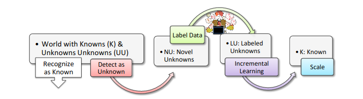

Open Set Recognition is a topic in machine learning which aims to classify the known and recognize the unknown. The term "open set" refers to the way we want to look at the problem of classification. The set is “open” because we want to classify what we can amongst the closed set of classes that we have, but we want to classify samples from the open world -- therefore open set.
To give a concrete example, imagine we have a classifier that recognizes the Arabic digits of 0 through 9. We give that classifier a Roman digit V which stands for 5. What does the model predict? The model predicts a 1, a 7 or even an 8, which is not exactly what we want from the model. Therefore, we would prefer no prediction as opposed to the prediction of 1, 7 or 8.
In the following sections we will:
Open set recognition can be categorized into 4 classes: known knowns (KKCs), known unknowns (KUCs), unknown known classes (UKCs), and unknown unknown classes (UUCs). - known known classes (KKCs) are labeled images of classes which we want to recognize. An example set of classes is the Arabic digits (0, 1, 2, 3, 4, 5, 6, 7, 8, 9) described in the introduction section. We have samples(images) for them and we have the semantic information about them - their labels.
known unknown classes (KUCs) are unlabeled images that do not belong to any of the classes that we want to recognize. For example, unlabeled images of the Roman numbers (I, II, III, IV, V, VI, VII, VIII, IX) are KUCs under this classification. We have the images but we don't know what they mean. An expert needs to sit down and label them.
unknown known classes (UKCs) are classes that we have no samples of but know that exist through side information. Examples of UKCs are Sumerian, Mayan and Chinese numbers. We know these exist, but we might not have any images of them.
unknown unknown classes (UUCs) are classes that we have no samples of and we don't know that exist. In the hypothetical case where we encounter alien species, they might have their own number systems. If we run examples of their numbers through our model, we would like to classify them as unknown. However, since we don't even know about these number systems, we foresee how the numbers will look like.
There are several topics related to Open Set Recognition (OSR) and they are either (1) more general formulations of OSR or (2) topics related to post-processing the results of (OSR). The former includes Open World Recognition and Open Long-Tailed recognition, which… . In addition, we have outlier detection and novelty detection which are old topics related to the OSR. The later category which aims to post-process the results from OSR contains incremental learning, scalable learning, active learning and co-segmentation.
|
|---|
| Fig. Imbalanced dataset in an open set formulation Image source: Lie, 2019 |
Open Long-Tailed Recognition is a reformulation of Open Set Recognition where the authors of Lie, 2019 dismiss the assumption that the dataset contains equal amounts of samples for each class and instead consider an imbalanced dataset. Some of the classes have thousands of samples, others have a more modest hundred samples and others have just a sample or two. Open Set models need to address class imbalance, few shot learning and open set recognition in a single model.
|  |
|---|
| Fig. Image source: Bendale, 2015 |
Open World Recognition is a generalization of Open Set Recognition where the authors of Bendale, 2015 argue that Open Set models need to handle the unknown class detections and incorporate them into the dataset after labeling.
Outlier detection and Novelty detection are two well-studied topics which are considered tangential to Open Set Recognition. Outlier detection assumes that a dataset contains data which belongs to the distribution (inliers) and data which does not belong to the distribution (outliers), and tries to find the outliers within the dataset. Novelty detection assumes the training dataset is clean and tries to find new data which does not belong to the data distribution.
Incremental learning is a topic in machine learning which dismisses the assumption that all data is known before training and aims to learn from new data as it comes. It is relevant to Open Set Recognition because we would like to adapt to changes in the data distribution as well as learn from newly labeled classes.
Scalable learning aims to prepare models for inference at scale including techniques like compressing models, speeding up models, distributing models, and others. It also aims to scale models in terms of number of class predictions it can produce. It is relevant to Open Set Recognition because after a sample get classified as unknown, we would like to learn what it is through labeling and incorporate it as a new class.
Active learning makes labeling less expensive by measuring how confident a model is on unlabeled data and finding which data to label first. This way, the data labeling process maximizes model confidence on a diverse set of new data. It is relevant to Open Set Recognition because we would like to include all the samples that classified as unknown and label them in the most efficient method possible.
Co-segmentation aims to segment images whose image-level label is known but segmentation is unknown. For example, we download 100 images of chickens and we would like to segment them from the rest of the image so we can train a segmentation model to recognize chickens. We know what the image-level label of the images is, which is chicken, and we get the segmentations from the co-segmentation model. It is relevant to Open Set Recognition because in the context of object recognition and detection, we need at least bounding boxes to train a model and we can get them using co-segmentation.
The methods which address Open Set Recognition are too many to write about in a single blog post, and I think literature surveys have already done that, such as this Recent Advances in Open Set Recognition: A Survey. Another resource is the GitHub repo by one of the authors of the survey above, listing a majority of the Open Set Recognition papers: Awesome Open Set Recognition list. In this section I will briefly list and describe some of the methods.
Traditional ML methods adapted to Open Set Recognition change the assumption of the models from closed-set to open-set. The methods include SVMs like 1-vs-Set classifier and the Best Fitting Hyperplane Classifier which add hyperplanes or constraints to enable open set recognition. The model additions aim to separate the hyperplane learned from the training data from the rest of the space. Another set of methods such as the Weibull-SVM use a branch of statistics called Extreme Value Theory to calibrate the threshold which is used to reject unknown images.
Lesser known methods include Sparse Representation-based Classifier which tries to find the most sparse representation of the testing sample with respect to the training samples, distance-based models such nearest-neighbor, and margin distribution based methods like Extreme Value Machine which appropriately modifies to handle open-set recognition task.
Neural network based models focus primarily on modifying the activations from last layer of the neural network.
Based on the recent popularity of adversarial learning methods in the context of generative models, there are some works which propose generative variants of open set approaches such as G-OpenMax and OSRCI. G-OpenMax uses a conditional generative adversarial network (cGAN) to generate unknown unknown class (UUC) samples. Open Set Recognition Counterfactual Image generation (OSRCI) also uses a GAN to generative UUC samples but it generates them close to the known known classes in order to differentiate them in the classification part of their model.
Huge thanks to Casey Ching for proof-reading this article.